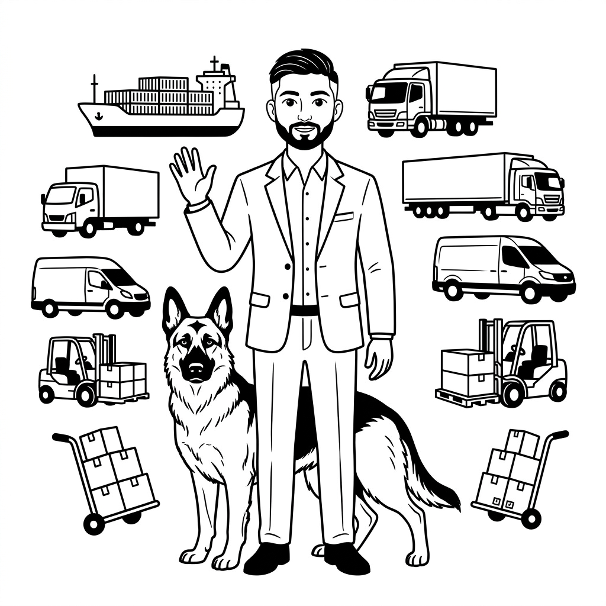

Available for new roles

⚙️ Available Now
Tharun Sriram Supply Chain Strategy & Analytics
I untangle complex logistics operations and build the automation systems that make them run without human babysitting.
35%
Downtime
Reduction
Reduction
85%
Violation
Reduction
Reduction
$77k
Savings via
Van Inspection
Van Inspection
Scroll
Selected Projects
All projects →
Fleet Automation
Van Rotation
Compliance App
Tracks 54 vehicles, flags non-compliance — achieved 100% Amazon 14-day compliance. Built in one week.
↗Safety & Savings
Van Inspection
System
4-photo audit trail per van, auto-assigned by planner. Recovered $77,283 in damage accountability last year.
↗Transport Ops · Tamil
Vanitha Trip
Calculator
Replaced ledger books with a bilingual trip P&L tool for truck operators — profit/loss per vehicle, per trip.
↗
Currently
Fleet Manager
Fleet Manager
→ Strategist
At VCE Logistics I manage a 54-vehicle Amazon delivery fleet — but most of my energy goes into building the systems that make operations run without constant intervention. I'm now looking to apply that same thinking at the strategy and analytics layer of supply chain.
Read my full story →
Fleet & Logistics
Automation & Data
Engineering
Leadership